Алгоритм преобразует алгоритм
При программировании на Delphi или Паскале иногда попадаются задачи, которые трудно "втиснуть" в стандартные конструкции языка. А решение лежит совсем рядом - в теории конечных автоматов. Мы не будем залезать в дебри, а просто покажем как это делается. Автор заранее просит у читателя прощения за то, что в тексте статьи используются блок-схемы. Это не модно сейчас, однако есть случаи, когда все-таки стоит их использовать.
Рассуждения об алгоритмах - как раз такой особый случай.
Лирическое отступление
Однажды, еще в школе, на уроке алгебры, я в первый раз услышал о существовании формальных преобразований. Помнится это были (a+b) 2.
Это было нечто! Меня поразила сама возможность выполнять ряд простых шагов и гарантированно получать правильный результат.
Ну а уж потом были примеры из тригонометрии: четырехэтажные дроби с ужасным количеством синусов, косинусов и бесконечно длинными аргументами, которые путем небольшой игры ума сворачивались в робкое 1+sin(x), а то и просто в неприметную 1.
С тех самых пор я весьма неравнодушен к формальным преобразованиям и стараюсь найти им применение в программировании. И, вы знаете, иногда получается! :-)
Давным-давно, когда люди еще не придумали объектно-ориентированное программирование, модным направлением было программирование структурное. Шутки шутками, но в результате именно структурного подхода мы сейчас имеем Pascal и Delphi.
Почему я говорю то Паскаль, то Дельфи? Просто потому, что лингвистическая основа Delphi - это Object Pascal, сильно выросший из детских штанишек, но все же узнаваемый. И новые объектно-ориентированные возможности и замечательные библиотеки классов в совокупности с CASE-средствами так и не скрыли полностью длинные уши структурного языка (и это замечательно!). Они вылезают то здесь, то там, в отдельных процедурах, в обработчиках событий... :-)
Так вот, в те давние времена возникла следующая ситуация:
| · | "Сочинение" алгоритмов решения различных задач - процесс творческий, а творчество очень не любит каких-либо ограничений. Cтало быть алгоритм может быть любым, сколь угодно запутанным, образующим петли и прочие нелинейности. (Особенно этим грешат процедуры, занимающиеся разного рода синтаксическим разбором.) |
| · | Стандартный Паскаль имеет очень ограниченное количество структурных инструкций ( if-then-else, while-do и т.д., вы это лучше меня знаете...) |
| · | А программу-то написать хочется! Что делать ? |
| · | А нельзя ли как-нибудь "втиснуть" этот наш премудрый алгоритм в куцый набор инструкций? |
| · | Можно! Причем используя вполне формальное преобразование. |
| · | Вот этим мы сейчас и займемся. |
Но в начале - немного теории.
Итак, структурное программирование учит нас, что есть 5 основных конструкций, из которых как из кубиков строится любая процедура:
 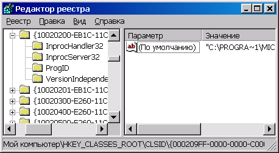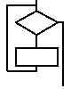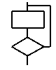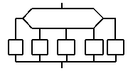
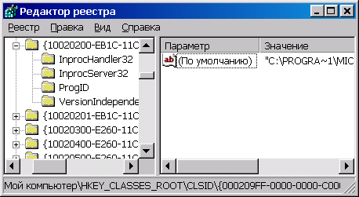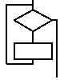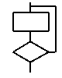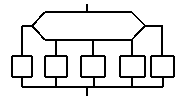
SEQUENCE
IF-THEN-ELSE WHILE-DO REPEAT-UNTIL CASE
Историческая справка для любознательных.
По этому поводу тоже было немало дебатов: сколько же структур действительно основных, а какие следует считать производными. Левые радикалы даже дошли до того, что основных структур только две: SEQUENCE и WHILE, а все остальные можно построить из них. Самое смешное, что это действительно так. Правда, размер текста программы при этом распухает неимоверно, но это уже детали... :-)
В нашем запутанном алгоритме наверняка не все так ужасно, как кажется. Скорее всего, там можно найти несколько фрагментов, подходящих под определение чисто структурных конструкций. Вопрос лишь в том, как эти конструкции соединить между собой.
А вот в этом как раз может помочь наша рабочая лошадка - непотопляемая конструкция REPEAT-CASE. При умелом применении эта нехитрая пара команд может "переварить" алгоритм любой сложности и запутанности. Главное, чтобы ВЫ четко представляли что делаете.
Однако хватит нам ходить вокруг да около, не пора ли заняться делом?
Предположим, у нас есть алгоритм следующего вида:
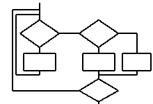
Хитрый ли он?
Да нет, конечно! Если приглядеться, он легко разбивается на 3 вложенные стандартные структуры:
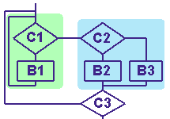
Так что мы с легкой душой можем воплотить его в программе вроде такой:
repeat
while C1 do
B1;
if C2 then
B2
else
B3;
until C3;
И все! Очень красиво и компактно, спасибо большое дедушке Вирту.
Как было бы хорошо, если бы в жизни нам попадались только такие алгоритмы. Однако в таком случае, вам незачем было бы читать эту статью! :-)
А что вы скажете на это:
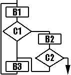
Выглядит вроде просто, это мы мигом!
Гмм.. да.. пробуем и так и эдак - в стандартный Паскаль это явно не укладывается. Можно, конечно, попытаться "расшить" процедурные блоки B1 и B3 или применить GOTO или EXIT из цикла. Но все это, согласитесь, выглядит как-то жалко и самодеятельно. Опять же надо каждый раз думать где разомкнуть цикл...
И вот тут-то появляемся мы, (на белом коне !-) с нашей универсальной отмычкой по имени REPEAT-CASE.
Теперь мы можем выполнить несколько чисто формальных шагов:
| · | Выделяем в нашем алгоритме фрагменты, которые хорошо укладываются в структурную модель (если такие есть). В нашем случае такой фрагмент только один: B2 + C2, т.е. последовательность из блока и условия. ( Если вы считаете, что фрагмент можно взять несколько шире и включить в него C1+B2+C2, я с вами соглашусь, но см.ниже) |
| · | Вне этих фрагментов ставим жирные точки в следующих местах: |
| · | на входе в модуль (обозначим ее 1) |
| · | на выходе модуля (обозначим 0) |
| · | на входах и выходах всех фрагментов, что мы нашли |
| · | во всех местах, где есть пересечение линий на блок-схеме |
| · | Пронумеруем оставшиеся точки произвольно. Позже мы еще поговорим о том, что могут на самом деле означать эти номера. В нашем примере получается 4 точки от 0 до 3. |
| · | Теперь мы готовы перейти к модели конечного автомата и написать-таки нашу программу. |
| · | Представьте, что есть некий блок, который может находиться в одном из 4 состояний. И есть набор действий, в результате которых блок переходит из одного состояния в другое. |
| · | Для отображения этого самого состояния, заведем в программе некоторую переменную, скажем, State. А внутри веток CASE будем изменять ее состояние. |
| · | Пишем нашу программу: |
var
State: integer;
begin
State := 1; {для любого алгоритма}
repeat
case State of
...
end;
until State = 0; {тоже для любого алгоритма}
end;
Теперь пропишем ветки case .Не забудьте в конце каждой ветки
уточнить состояние: case State of
1:
begin
B1;
if C1 then
State := 2
else
State := 3
end;
2:
begin
B2;
if C2 then
State := 0
else
State := 3
end;
3:
begin
B3;
State := 1
end;
end;
| · | Все! Программа готова. Идите и попробуйте, она работает. И с точки зрения логики Паскаля все безупречно - никаких тебе GOTO и прочих неприятностей. |
Осознание
А теперь, после того, как мы добились столь блестящего результата, давайте осознаем: что же мы сделали и что у нас получилось.
Что сделали (или как все это назвать по-настоящему)
| · | Мы изобразили наш алгоритм как блок-схему или, другими словами, направленный граф |
| · | Затем провели инвариантное преобразование этого графа с выделением нескольких стационарных состояний программы - конечного автомата |
| · | В результате получили новый граф, который легко укладывается в структурные конструкции Паскаля (Delphi) |
Что из это следует
Проводя указанные действия несколько раз для разных алгоритмов, можно заметить, что на самом деле наши произвольно расставленные точки-состояния не такие уж случайные и произвольные. Как правило, при более глубоком рассмотрении вашего конкретного алгоритма можно найти каждому из этих состояний свое название. Это название может быть гораздо более выразительным, чем просто 1-2-3, поскольку это действительно состояния вашей программы.
О чем я говорю? Пусть ваш алгоритм занимается, скажем, синтаксическим разбором HTML-файла. Тогда одно из состояний может звучать как "Обнаружен тэг BODY" или "Найден конец документа".
Паскаль предлагает нам замечательное средство для работы с такими обозначениями в символическом виде и об этом средстве сейчас часто забывают. Программа из нашего примера может выглядеть так:
var
State: (START, EOF_found, Line_Added, DONE);
begin
State := START; {для любого алгоритма}
repeat
case State of
START:
begin
B1;
if C1 then
State := EOF_Found
else
State := Line_Added
end;
EOF_Found:
begin
B2;
if C2 then
State := DONE
else
State := Line_Added
end;
Line_Added:
begin
B3;
State := START
end;
end;
until State = DONE; {тоже для любого алгоритма}
end;
Замечательно, что Delphi все еще поддерживает эту спецификацию и даже показывает при отладке символьное представление состояния! Это очень удобно на практике. Спасибо, Borland!
Другое следствие
Возможно вы, как и я, проделав подряд несколько таких преобразований и войдя во вкус, заметите, что стали мыслить при программировании чуть-чуть иначе. Иногда, особенно когда задача несколько запутана, хочется сразу выделить несколько важных состояний и строить обработчик уже вокруг них. Это правильное желание, ему стоит потакать. :-)
Кстати, сейчас тема конечных автоматов вновь стала актуальной и то и дело мелькает на страницах компьютерных журналов.
Небольшое исследование: крайние случаи

Как сказал один мудрый человек, "Идея, доведенная до абсурда, часто превращается в свою противоположность". Давайте попробуем довести наш метод до крайней степени.
В нашем случае это означает добавление еще двух состояний - 4 и 5. Тогда программа примет вид:
case State of
1:
begin
B1;
State := 4
end;
2:
begin
B2;
State := 5
end;
3:
begin
B3;
State := 1
end;
4: if C1 then
State := 2
else
State := 3;
5: if C2 then
State := 0
else
State := 3;
end;
Хорошо это или плохо?
Хорошо, в том смысле, что даже при таком издевательстве программа не перестает работать правильно. С другой стороны, посмотрите на исходный код: где прозрачность, где легкость и ясность? Суть алгоритма растворена в сплошных переходах состояний и из-за этого теряется.
Нет, пожалуй этот вариант нам не подходит.
А что, если пойти в другую сторону и уменьшить число выделенных состояний? В нашем примере реально только исключить состояние 2.
(Да, я знаю, на блок-схеме двойка есть, но давайте пока ее не замечать, OK? :)
После "приведения подобных" программа будет иметь следующий вид:
case State of
1:
begin
B1;
State := 3;
if C1 then
begin
B2;
if C2 then
State := 0
end
end;
3:
begin
B3;
State := 1
end;
end;
(Если непонятно, то здесь формально получаются две ветки ELSE, ведущие обе к третьему состоянию. Если состояние вынести вверх, до условия, то программа получается короче. Впрочем, это - дело вкуса :)
Как вам этот вариант? Мне кажется он тоже имеет право на жизнь, хотя лично мне вариант с четырьмя состояниями нравится больше. Как-то он нагляднее показывает что куда переходит и при каких условиях. А вам? Предвижу возражения такого толка, что при подобном подходе программы будут иметь повышенную склонность к зацикливанию. И да и нет. Циклы вообще склонны к зацикливанию :-) особенно если написать что-нибудь вроде repeat until false;. Так на то и голова дана, чтобы карась не дремал!
А если серьезно, то устойчивость работы преобразованных таким образом программ прямо и недвусмысленно показывает, насколько удачно вы проработали исходную блок-схему и насколько аккуратно ее преобразовали. Поскольку на то оно и инвариантное преобразование, чтобы ничего не менять в смысле и логике программы, а затрагивать лишь ее внешнее представление.
Возможно кто-нибудь захочет поручить и само это преобразование программе, это мог бы быть компонент Delphi или отдельная утилита, этакий Diagram Automation Wizard. Если такое случится, мне бы очень хотелось посмотреть на результат.
И, наконец, мне нужно расставить точки над i.
Я ни в коей мере не претендую на авторство в данном формальном подходе, более того, все проблемы и решения, изложенные в этой статье, известны уже довольно давно. Моя цель была просто напомнить вам об одном красивом, но, боюсь, забытом подходе к программированию на Паскале и Delphi.